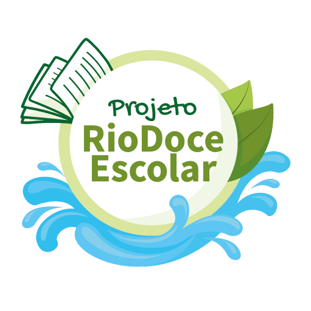
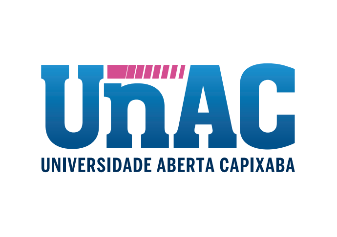

Cursos Abertos do Ifes aprendizado no seu ritmo
Encontre cursos livres do Ifes, amplie suas competências e habilidades, conquiste seu certificado e avance na carreira - tudo gratuito, no seu tempo e de onde você estiver.
Cursos em destaque
Explore cursos selecionados para começar seus estudos com temas úteis, gratuitos e certificados pelo Ifes.

Como criar um MOOC

Moodle 4 para Educadores

Acessibilidade e Tecnologia

Introdução à Libras

Educação para as relações étnico-raciais

MOOC de Lovelace: Programação Python e C
Adicionados recentemente
Conheça os novos cursos lançados em nossa plataforma.

A Química dos produtos de limpeza

Espanhol Comunicativo para Brasileiros

Uso de Realidade Aumentada no Ensino de Ciências

Fundamentos da Eficiência Energética

Caminhos da Educação Crítica: Integração entre Pedagogia e Educação Ambiental

Desafios e Caminhos da Avaliação Matemática Inclusiva

PHP Essencial: Primeiros Passos na Programação Web

Superdotação na Escola: identificando indícios em adolescentes e adultos
Mais cursados
Conheça os cursos mais cursados em nossa plataforma

Inglês Comunicativo - Aprenda o Básico Essencial

Moodle para Educadores

Uso Educacional do Canva

Google Drive: Colaboração na prática
Acessibilidade e Tecnologia

Mediação Pedagógica no Moodle

Educador Maker: Primeiros Passos

Ferramenta para gravação de videoaulas
O que é curso MOOC?
Os Cursos Abertos do Ifes seguem a tendência mundial de cursos 100% on-line no formato MOOC, do inglês Massive Open Online Courses.
São formações livres, abertas à comunidade e organizadas para que você estude com autonomia. Basta criar uma conta, escolher um curso e avançar no seu tempo.
Do cadastro ao certificado
-
Cadastre-se
Crie sua conta gratuita e acesse os cursos pela plataforma do Ifes no smartphone, tablet ou computador.
-
Escolha um curso
Use o catálogo para encontrar uma formação aberta do Ifes e ampliar seus conhecimentos.
-
Faça o curso
Organize sua rotina de estudos, realize as atividades e acompanhe seu próprio avanço.
-
Emita seu certificado
Ao final, após aprovação, emita seu certificado na própria plataforma de Cursos Abertos do Ifes.
Projetos parceiros
Hubs institucionais com identidade própria e grupos de cursos relacionados.

Projeto parceiro · 31 cursosRio Doce Escolar
Educação ambiental a partir da bacia do Rio Doce: água, território, escola e comunidade.
Conhecer o projeto →
Projeto parceiro · 33 cursosUnAC
Coleção de cursos em parceria institucional, com identidade e hub próprios na plataforma.
Conhecer o projeto →Séries para continuar aprendendo
Coleções curadas por tema, público ou progressão. Escolha uma série e avance pelos cursos relacionados.
Lovelace
Programação, pensamento computacional e tecnologia com foco em meninas e mulheres.
Explorar série → Série4 cursosEducador Maker
Práticas mão na massa para professores que querem criar, prototipar e inovar em sala.
Explorar série → Série3 cursosAtendente e Vendedor
Formação prática para atendimento, vendas e relacionamento com clientes.
Explorar série → Série3 cursosEmbrace
Conteúdos em rede, com abordagem internacional e temas de formação cidadã.
Explorar série → SériePT · ENLesson Study
Estudo de aula para formação docente, em versões em português e inglês.
Explorar série →Servidor público, organize sua trilha com os MOOCs do Ifes
Combine cursos gratuitos, on-line e certificados para planejar seu período de capacitação com mais clareza antes de abrir o processo no seu órgão.
Perguntas frequentes
As perguntas mais comuns aparecem primeiro. A lista completa mantém as 34 dúvidas do site atual para consulta rápida.
1. O que é um curso do tipo MOOC?
MOOCs são Cursos On-line, Abertos e Massivos (do inglês: Massive Open On-line Courses). São uma grande forma de inclusão, uma vez que podem ser cursados por qualquer pessoa, de qualquer lugar e no seu tempo!
Na plataforma do Ifes, os MOOCs têm como características: serem totalmente on-line, de curta duração (máx. 60h), ofertados continuamente (turmas anuais), não necessitarem de processo seletivo (abertos ao grande público), serem gratuitos (inclusive a certificação), realizados por meio de autoestudo (sem tutoria) e terem certificação automática, após o aluno realizar o curso e cumprir os requisitos mínimos exigidos para a certificação.
2. Quais as vantagens deste tipo de curso?
A principal vantagem é a flexibilidade, uma vez que os MOOCs podem ser cursados por qualquer pessoa, de qualquer lugar e em qualquer momento. Além disso, eles podem ser utilizados para diversos fins, como obter certificação para progressões de carreira ou para concurso, para fins de licença capacitação, para formação continuada ao longo da vida, como créditos complementares em cursos que o permitam, como preparatório para provas, para nivelamento, para aprender uma nova língua ou software, professores podem usar como parte de suas disciplinas e tantas outras possibilidades.
3. Qual a carga horária de um curso MOOC?
No Ifes um MOOC não tem carga horária mínima, mas tem no máximo 60h. Para saber a carga horária de um curso específico, basta acessar a página de informações sobre o curso.
4. Qual o prazo de um curso MOOC?
Apesar dos MOOCs estarem sempre disponíveis na plataforma, eles são abertos em turmas anuais, que iniciam em 01 de janeiro e finalizam em 31 de dezembro de cada ano. Assim, a partir do momento em que se inicia um curso, você tem até 31 de dezembro daquele ano para o concluir.
5. Posso iniciar um curso em um ano e finalizar no ano seguinte?
As ofertas dos nossos cursos são anuais, portanto, não é possível iniciar um curso em um ano e finalizá-lo no ano seguinte. O curso deve ser finalizado no mesmo ano que inicia.
6. Quero me inscrever no curso, como faço?
- Caso seja novo por aqui, primeiramente, você deverá CRIAR SUA CONTA, que é única na plataforma.
- Após confirmar a criação de sua conta, você conseguirá se inscrever em um ou mais cursos que estejam disponíveis na página inicial da plataforma de Cursos Abertos do Ifes.
- Ao clicar no curso desejado, você será direcionado para um resumo das informações do curso e no final terá um botão “Inscreva-me”. Basta clicar nele e você estará automaticamente inscrito no curso.
7. Quero criar minha conta, como faço?
- Na plataforma de Cursos Abertos do Ifes, clique no botão CRIAR CONTA, localizado no topo da página, no lado direito.
- No campo “Esta é a sua primeira vez aqui?", clique no botão CRIAR UMA CONTA. Ao clicar, um Formulário de Nova Conta será aberto.
- Em seguida, preencha seus dados nesse Formulário e confirme a criação de seu usuário na plataforma.
- Você receberá um e-mail e deverá ATIVAR o seu usuário.
OBS.: Orientamos que NÃO utilize emails que sejam @hotmail.com ou @outlook.com. Nosso serviço de e-mail está temporariamente com restrição de envio para estes provedores, inviabilizando a ATIVAÇÃO do seu cadastro na nossa plataforma.
8. Quero criar minha senha, tem algum segredo?
- A senha deve ter ao menos 8 caracteres, sendo ao menos 1 dígito, ao menos 1 letra minúscula, ao menos 1 letra maiúscula, no mínimo 1 caractere não alfa-numéricos, como *, -, ou #
- Exemplo de senha válida: Cursos@123
- Veja que nesse exemplo tem 8 caracteres, que é a quantidade mínima, tem letra maiúscula, letra minúscula, números e caracter especial, no caso o "@".
- Em caso de novas dúvidas entre em contato pelo Suporte.
9. Não recebi e-mail de ativação do meu usuário, como proceder?
Primeiramente, verifique sua caixa de Spam e se o e-mail de ativação foi automaticamente direcionado para ela. Em caso afirmativo, orientamos que você informe que este e-mail não é do tipo Spam. Com esta ação, os novos e-mails da nossa plataforma chegarão na sua caixa de entrada.
Entretanto, caso realmente não encontre o email de ativação do usuário, favor entrar em contato com o suporte (https://mooc.cefor.ifes.edu.br/suporte), informando nome completo, CPF e um e-mail alternativo.
OBS.: Orientamos que NÃO utilize emails que sejam @hotmail.com ou @outlook.com. Nosso serviço de e-mail está temporariamente com restrição de envio para estes provedores, inviabilizando a ATIVAÇÃO do seu cadastro na nossa plataforma.
10. Esqueci minha senha ou usuário, como proceder?
Na tela de Login, clique no link "Esqueceu seu usuário ou senha?". Faça a busca pelo seu nome de usuário ou e-mail. Se sua conta for encontrada no banco de dados, um email será enviado para seu endereço de email, com as instruções sobre como restabelecer seu acesso.
OBS.: Caso o seu e-mail, cadastrado na nossa plataforma, seja do provedor @hotmail.com ou @outlook.com, favor entrar em contato com o suporte (https://mooc.cefor.ifes.edu.br/suporte), informando nome completo, CPF e um e-mail alternativo. Nosso serviço de e-mail está temporariamente com restrição de envio para estes provedores, inviabilizando a recuperação do seu cadastro na nossa plataforma.
11. Posso fazer quantos cursos do tipo MOOC simultaneamente?
Você pode realizar simultaneamente quantos cursos desejar na plataforma MOOC do Ifes. Organize seus estudos e aproveite as muitas oportunidades disponíveis!
12. Quem pode propor MOOC?
O proponente de MOOC deve ser obrigatoriamente um servidor do Ifes. É ele quem abre o processo de criação do curso na instituição, tornando-se o responsável por aquele MOOC. Porém, é possível que profissionais externos ao Ifes, alunos ou bolsistas façam parte de uma equipe de elaboração de um MOOC desde que um dos membros da equipe seja servidor.
13. Quero propor um MOOC, como proceder?
Para propor um curso MOOC, é obrigatório que você seja certificado no curso “Como Criar um MOOC?”. Nele, você conhecerá as orientações metodológicas e os procedimentos detalhados. Para uma visão geral do processo e dos documentos necessários, sugerimos que explore a pasta “Modelos MOOC”, em especial os arquivos sobre o processo para criação de cursos MOOC.
14. Para que posso utilizar o certificado de um MOOC?
Você pode usar o certificado de um MOOC como atividade complementar de um curso, para progressão no trabalho, em provas de títulos em concursos, em licença para capacitação, dentre outras tantas possibilidades. Atente-se sempre às regras da sua organização, do projeto político-pedagógico da formação que está realizando (técnico, graduação, pós-graduação, etc) e do concurso para o qual estiver concorrendo.
15. Posso usar o certificado do MOOC para pagamento de horas no Ifes?
Sim, desde que seja feito dentro do período determinado pela Instituição.
16. Posso usar o MOOC para licença capacitação?
Pode sim. Os MOOCs do Ifes são uma ótima oportunidade para você se atualizar no seu período de capacitação.
17. Qual a equivalência de horas do curso com a quantidade de dias de licença capacitação?
A carga horária semanal mínima é de 30 horas de curso.
18. Posso me inscrever em mais de um curso para completar a carga horária da licença capacitação?
Sim. A carga horária necessária em cursos durante o seu período de licença irá variar de acordo com a quantidade de dias que você irá usufruir. É importante que você se inscreva em um quantitativo de cursos em que a soma das cargas horárias sejam suficientes.
Planeje quando iniciará e quando finalizará cada curso. Uma opção é colocar a data de início e fim da licença capacitação em todos e realizá-los concomitantemente. Outra opção é realizar sequencialmente, um após o outro. Esteja atento para que em todos os dias da licença você esteja realizando um curso e que a carga horária semanal seja de, no mínimo, 30h
19. Minha licença de capacitação começa em certa data, posso adiantar a realização do curso?
Não. Ao se inscrever no curso e informar que ele será usado para licença capacitação, você informará a data de início e término do curso. O sistema então, só habilita o seu acesso ao curso na data informada. Então, você irá iniciar e precisa finalizar, dentro do prazo que você informou no cadastro.
20. Como gerar a declaração de confirmação de inscrição no curso, para anexar ao meu processo de solicitação de licença para capacitação?
Você deverá gerar e salvar a sua declaração no mesmo dia em que se inscrever no curso e informar as datas de sua licença, pois, no dia seguinte o seu acesso será suspenso até a data de início da sua licença para capacitação (data de início que você informou anteriormente).
Então, na tela de confirmação do período de realização do curso, você irá clicar primeiramente no botão Continuar e, em seguida, no botão Gerar. A declaração será aberta na sua tela.
21. Posso ter carteirinha de estudante?
Não. Somente alunos de cursos regulares (técnico, graduação e pós-graduação) têm direito à Carteirinha de Estudante, o que não é o caso de alunos dos Curso Abertos do Ifes.
22. Quero falar com o tutor do curso, como faço?
O modelo de cursos abertos (MOOC) oferece total autonomia ao aluno e não possui tutor. É você quem faz seu próprio itinerário para estudar, sem necessidade de tutoria on-line ou off-line.
23. Quero falar com o professor do curso, como faço?
Você pode enviar sugestões para melhoria de conteúdos ou de atividades através do Suporte. Suas sugestões serão repassadas ao Professor que desenvolveu o curso.
24. Sou visitante e quero ter acesso ao curso, como faço?
Não há acesso como visitante. Para ter acesso ao conteúdo dos cursos você precisará CRIAR SUA CONTA gratuitamente na plataforma.
25. Não finalizei meu curso e ele foi encerrado, posso retomar de onde parei?
Não. Todos os cursos são reiniciados dia 1º de janeiro e caso você não o tenha concluído, precisará realizá-lo novamente desde o ínicio.
26. O certificado é emitido pelo Ifes?
Sim. Tendo aproveitamento mínimo de 60%, você mesmo poderá emitir seu Certificado. E com a facilidade de ser on-line.
27. Até quanto tempo após concluir o curso meu certificado pode ser emitido?
Você terá até um ano, após a data de término do curso, para emitir seu Certificado. Lembrando que os Certificados estão disponíveis apenas em formato virtual validável.
28. O que é validação de certificado?
Validação de certificado é você verificar a autenticidade do documento.
29. Como validar um certificado?
Se você recebeu um certificado de nossa plataforma e deseja verificar a autenticidade do mesmo, basta clicar em Validar Certificado que está no final da página inicial da plataforma.
30. Quero emitir meu certificado, mas minha turma foi encerrada, como faço?
- Você poderá emitir seu Certificado até um ano depois da data de encerramento do seu curso.
- Caso você tenha realizado todas as atividades avaliativas propostas pelo curso e alcançado aproveitamento mínimo de 60% ou maior, basta acessar seu curso em TURMAS ANTERIORES e emitir o Certificado.
31. Sou aluno de um curso MOOC, tenho direito a emissão de declaração?
Os MOOCs permitem a emissão de certificado, após o aluno realizar o curso e cumprir os requisitos mínimos exigidos. A emissão de declaração é possível apenas para o caso particular para licença para capacitação.
32. Finalizei meu curso, mas o progresso de conclusão não consta como 100% concluído.
Possivelmente algum material não foi estudado ou alguma atividade não foi realizada. Entretanto, se você tiver cumprido os requisitos do curso e obtido no mínimo 60%, isso não o impedirá de emitir o certificado.
33. Quero acessar materiais da minha turma encerrada, como faço?
Na "Página inicial do site" você terá acesso a todos os seus cursos, inclusive os cursos com TURMAS já ENCERRADAS.
Ao final da grade de cursos, clique no botão Clique para acessar TURMAS ANTERIORES. Você será direcionado para “Área do estudante”.
No campo "Você ainda não se identificou. (Acessar)", insira seu login e senha para acessar a plataforma de Cursos Abertos do Ifes. Se você é servidor do Ifes, use seu SIAPE.
Pronto, procure o curso desejado pelo ano de oferta.
34. Sou pesquisador ou gestor e gostaria de ter acesso a dados da plataforma de Cursos Abertos do Ifes, como solicitar?
A plataforma de Cursos Abertos do Ifes tem disponível no seu rodapé um Painel de Indicadores da Plataforma. Neste painel você encontrará informações como: os cursos com mais procura, quantidade de matrículas, matrículas ano a ano e também realizar filtragem dos dados por um curso, unidade de ensino e tipo de curso. Tudo muito simples e ilustrado graficamente para facilitar a compreensão dos dados.
Não encontrou o que procura?